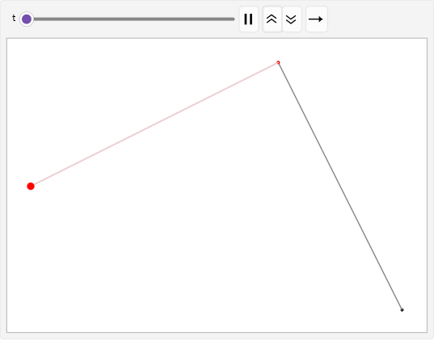
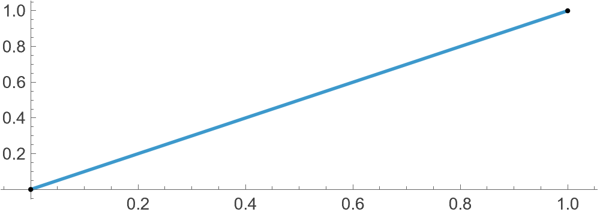
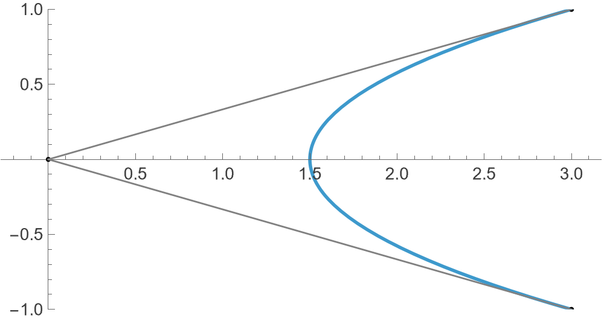
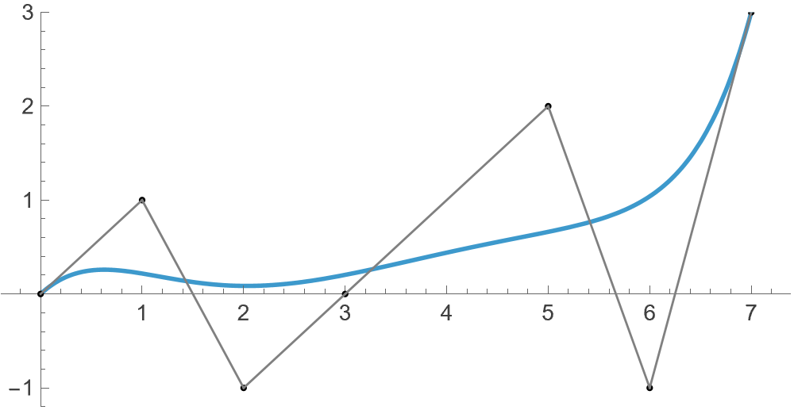
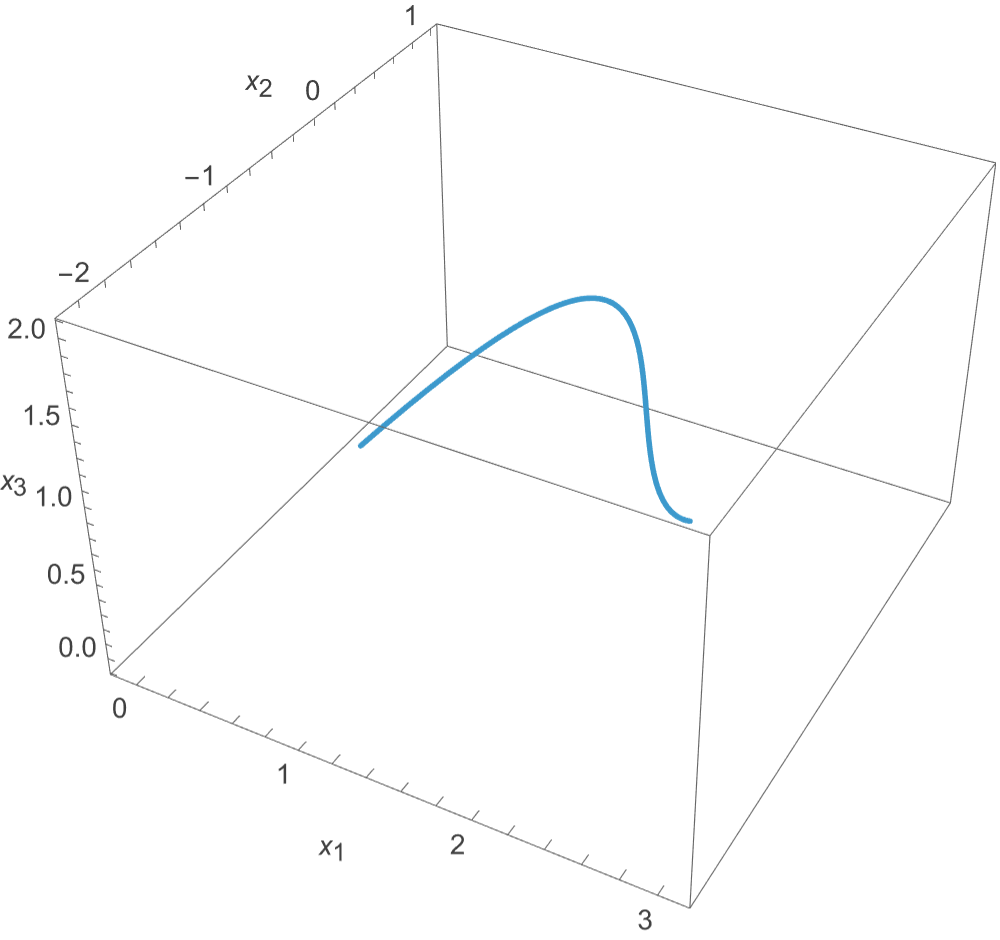

Bezier curves
06 May, 2026
Bezier curves are used to model smooth curves of various degrees. A discrete often finite set of points are used to “control” the curve, in the sense that the resulting curve is a smooth approximation of the poligonal path obtained by joining said points end to end. The simplest Bezier curve (linear case) is obtained by using 2 given points P0 and P1. Resultant is merely joining P0 with P1, that is
Bez (P0, P1) = (1 − t)P0 + tP1
where t varies from an appropriate range (generally 0 ≤ t ≤ 1) to obtain a continuous series of points resulting in a line segment. I am using Mathematica to model this, so we have a basic join function:
join[{P0_, P1_}, t_] := (1-t) P0 + t P1This is a linear curve, as the derivative wrt t is simply
D[join[{P0, P1}, t], t]
(* -P0+P1 *)which is a scalar (free of t). The second degree Bezier curve is more interesting. Suppose we have P0, P1, P2 three given control points. We first join P0 with P1, and P1 with P2, and then further dynamically join the “corresponding points” on these two paths.

Joining P0 with P1 we obtain
P0(1 − t) + P1t
and similarly we obtain
P1(1 − t) + P2t
Note that these two are still points, for each value of t. Thus we join them too
join[{join[{P0, P1}, t], join[{P1, P2}, t]}, t] // Simplifyto obtain the second degree Bezier curve given by:
Bez (P0, P1, P2) = P0(t − 1)2 + t(P2t − 2P1(t − 1)).
Differentiating wrt t the first derivative is
2(P0(t − 1) + P1(1 − 2t) + P2t)
clearly a linear function. The second derivative:
2(P0 − 2P1 + P2),
a scalar. Furthering one more step, omitting the derivations, the third degree Bezier curve is given by
−(−1 + t)3P0 + t(3(−1 + t)2P1 + t(−3(−1 + t)P2 + tP3)).
In general, the following two functions will calculate the Bezier curve respecting any given control points:
f[t_][batch_] := join[#, t] & /@ Partition[batch, 2, 1]
bezier[pts_List, t_] := Nest[f[t], pts, Length@pts - 1]The bezier function returns the parametric coordinates
of the Bezier curve respecting the given control points
pts. For example, with
pts = { {1, 2}, {0, -1}, {-3, 4}, {10, 11} } we can
obtain
bezier[{ {1, 2}, {0, -1}, {-3, 4}, {10, 11} }, t] // Simplify
(* {1-3 t-6 t^2+18 t^3,2-9 t+24 t^2-6 t^3} *)Now time for some visualisations.
pts = { {0, 0}, {1, 1} };
ParametricPlot[
bezier[pts,t],
{t, 0, 1},
Epilog -> {Point /@ pts, Gray, Line /@ Partition[pts, 2, 1]}
]
pts = { {3, 1}, {0, 0}, {3, -1} };
(* same as above *)
A more general case:
pts = { {0, 0}, {1, 1}, {2, -1}, {3, 0}, {5, 2}, {6, -1}, {7, 3} };
(* same as above *)
Very interestingly, due to the way we have written this setup, merely changing the points to 3D points results in a 3D curve. For example:
pts = { {0, 0, 0}, {1, 1, 1}, {2, -1, 1}, {3, 0, 2} };
(* same as above *)
Amazing to see that linear functions and compositions thereof result in the higher dimensional curves. If you liked this, I am glad. The code is available in this .nb file.
Thanks for reading. Return to see all blog posts, or to the home page.